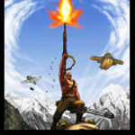
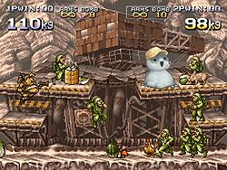
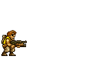

Metal Slug
 De: La Frikipedia, la enciclopedia extremadamente seria.
De: La Frikipedia, la enciclopedia extremadamente seria.

|
ATENCIÓN
Este artículo contiene demasiados tachones y en vez de provocar gracia, parece los apuntes de un niño de preescolar. Ya puede ser porque el autor es un novato, bien es un topo sin vista, o simplemente algún n00b que se cree que abusar del chiste mierdoso mola y no se da cuenta que jode bastante el artículo. Así que coge la goma de borrar y entra todas esas rayas para que el articulo deje de parecer una cebra. Si no sabes cómo empezar, mira en la discusión del artículo, puede que te ayude en algo.
|
De la serie Videojuegos:
Metal Slug

Estos cosplayers no respetan ná
| Desarrollado por:
|
Los NeoGEOS
|
| Distribuido por:
|
una fregoneta
|
| Diseñado por:
|
Saddam Hussein(de ahi su parecido con Morden, mirad en Wikipedia, gilipollas)
|
| Motor
|
el del tanque
|
| Género(s)
|
andrógino
|
| Fecha de lanzamiento:
|
el 3:36:1987 a las 12 en Cabo Cañaveral
|
| Modos de juego:
|
aporrear al botón y machacarle
|
| Requisitos:
|
una moneda de 25 pesetas
|
| Disponible en:
|
bares y antros
|
| Formatos:
|
una piedra con capacidad de -32 bits
|
| Edades:
|
10-18
|
| Puntuaciones:
|
-yo llegué a los 100000000 puntos -pues yo no pase de la primera pantalla
|
tiu!tiu!tiu!tiu!tiu!tiu!cachuuum!buuuum!blom!
Marco Rossi. Ni se hernia ni ná. Un tío como
Dios manda.
El Metal Slug es un juego desarrollado por SNK extremadamente violento, que incluye sexo, drogas, orgías en Pola de Laviana y demás teleperversiones a domicilio.
Historia
Personajes
Los güenos

Fio y Nadia
antes de violar a la gafotas felicitándola (sin motivos aparentes)
 Allen. El enemigo más
hijoputa acérrimo de todos.
- Marco Rossi: Hijo ilegítimo de Rambo y Solid Snake, este rubiales es el protagonista indiscutible de todos los Metal Slug (excepto de ese despropósito llamado Metal Slug Advance).
- Tarma Roving: El segundón de todos los Metal Slug. Siempre va con gafas de sol "para vacilar", pero en realidad tiene hipersensibilidad en la retina de ver tanto
los documentales de la 2 porno.
- Fio Germi: Fémina heterohomolesbiana prima segunda por parte de madre de Rambo. Le gusta la carne y el pescado, aunque esto se deduce de la oración anterior.
- Eri Kasamoto: Su historia no está muy definida... pero se sabe que
es un poco puta le gustan los chicles.
- Trevor Spacey: Guaperas que parece un clon mal hecho de Tarma, puesto que llevan el mismo cutre-peinado a tazón (sí, ése que llevan los monjes y los pringaos, ése mismo). Sustituye como personaje seleccionable a Tarma en el Metal Slug 4.

Tarma cuando terminas una misión (si sale vivo)
- Nadia Cassel: Sustituye a Eri en el Metal Slug 4, y es el unico Metal Slug donde aparece, aunque no vuelve a aparecer en la saga
pues parece ser que después de violar a Fio una tarde de primavera, Fio se vengó al día siguiente usando al elefante, al camello, al avestruz y a la burra para que le hicieran a Nadia un bukake del que no se iba a olvidar nunca, el funeral fue a lo vikingo
- Ralf Jones: Anteriormente se llamaba Paco, pero le cambiaron el nombre por su malsonancia. Fue prota en sus años mozos junto con Clark Steel del Irakí Warros, porno-juego homosexual de sadomasoquismo cuya trama nos situaba en la Guerra del Golfo. Es seleccionable en el Metal Slug 6.
- Clark Steel: Compañero de farra de Ralf y que, junto a él, hacen las delicias de cientos de nenas y de miles de nenes en el Metal Slug 6 pero eso no es todo, vuelve a la acción en Metal Slug 7/X
XX, y como cualquier personaje de Merol Slog, posee habilidades unicas, las cuales se desconocen veran ustedes al jugar... !HA¡, ¿acaso creiste que te las iba a mencionar?, pues te equivocas, descubrelas por ti mismo, cojonudo.
- Walter: Prota masculino del Metal Slug Advance. Por el nombre se cree que es sudamericano.
- Tyra: Prota femenina del Metal Slug Advance. Se rumorea que en realidad es Constantino Romero travestido.
Los malos malosos
- General Morden: El Hitler del Siglo XXI. Dicen que siempre tiene un plan para dominar el mundo, pero al final la caga. Claro ejemplo de las aspiraciones de un funcionario del estado.
- El Ejercito de clones:Ya que el Grl.morden y Jango Fett eran muy buenos amigos le pidio un ejercito de clones a los caminianos aun que los muy mecos se mueran de un solo balaso
- Allen: Cabrón. Hijoputa. Lleva una Gatling Gun. No muere ni aunque le tires una bomba nuclear. Eso sí, es un tío cojonudo cuando te coge confianza. Se cree que es pariente de Mr. T, sólo que no tiene su gran peinado. ¿Por qué? Pues porque es calvo, gañanes.
- Aliens: Tipejos cabezones con muchos tentáculos (igual que en muchos hentai) que están aliados con el General Morden, aunque cuando se ven negros no dudan en traicionarle.
- Aliens Némesis: Otro tipo de aliens que se quiere comer a los primeros aliens. Didáctico, ¿eh?
Metal Slug 1
El General Morden quiere dominar el mundo. Solo tú y tu bolsillo podéis liberarnos de su tiranía. En este Metal Slug no podías elegir personaje, tenías que joderte conformarte con Marco (1P) y Tarma (2P).
Metal Slug 2
El General Morden quiere dominar el mundo, y para ayudarle se ha traído a sus amigos aliens-canis del espacio. En este Metal Slug se incluyeron a dos chicas llamadas Fio y Eri porque claro que sólo fueran tíos los que salvan el mundo sería supuestamente machista ¿no?. Tambien su final es el de la guerra de los mundos pero en este no se premia ni reconoce con nada al que se sacrifico en el avion.
Metal Slug X
Versión para adultos de este arcade de disparos. En él, el General Morden quiere hacer cosas indecentes con Fio y Eri (o Marco y Tarma, depente de a qué personaje uses), algo que tú no puedes permitir.
Metal Slug 3
 Fat Island Mode. No es coña, en la versión de sobremesa viene este modo de juego.
El mejor de toda la saga, sobre todo por su épico nivel final, el cual transcurre en la Estación Espacial Internacional sitiada por comunitas, nazis, yankis, yonkis, Hugo Chávez, Merkel, Globex el súpervillano de Los Simpson que conquistó la costa este, tu puta madre comunistas-nazis, ciento y la madre que los parió, ¡¡¡ME CAGO EN LA PUTA!!!
Metal Slug 4
-КЕНГШЩЗФЫВ ОЛДЖ!!! -¿ЕНГ? -ЙЦУКЕНГШЩЗФЫВАПРОЛДЖЯЧСМИТ!!!!!!!
¡¡¡El Doctor X ha escapado de prisión!!! ¡¡¡Pero Action Ma...!!! No, esto no iba aquí, aunque encaja a medias. El General Morden se ha tomado un descanso, y ahora el enemigo a batir es el típico profesor chiflado de turno, que con sus robots MASTURBATOR 3000 tenía pensado diezmar a base de orgasmos a la población del planeta Tierra. En este juego, Tarma y Eri son "sustituidos" por Nadia y Trevor, debido a problemillas sobre un hipotético aumento de sueldo y esas cosas...
Metal Slug 5
En Buenos Aires, un disco especial que contiene porno secretos del tanque Metal Slug es robado por un misterioso grupo llamado el Ejército de Pitolomeo tu misión es ir cargandote a los terroristas para matar al demonio/muerte o lo que coño sea esa cosa.
Este juego estuvo basado en los hechos acontecidos en la Argentina en el 2001 durante el periodo final del gobierno de De La Rua (Ver: Fernando De La Grúa), de ahí el parecido físico del mismo con el del antagonista del juego, aparte del logotipo argento con la "A" en el medio que fue remplazada por la "X" de Morden.
Metal Slug 6
Puede que, junto con el 3, sea el mejor de toda la saga. 6 personajes seleccionables, inclusión de un sistema de combate cuerpo a cuerpo...brutal. Ah, ¿qué aquí hay que hablar del argumento? Pues es fácil, resumiendo: El General Morden quiere conquistar el mundo, para ello se alía por enésima vez con los Aliens, pero un nuevo tipo de aliens (aliens némesis) surge de un Bujero Negro y se come a los aliens (los primeros, no a los aliens tipo némesis), por lo que, después de varios ruegos y perdones nos aliamos con la alianza tripartita Aliens-morden-los güenos y nos embarcamos en una misión suicida contra los aliens némesis, que quieren ejecutar el malvado Plan Ibarretxe.
Metal Slug 7
¡¡¡POR EL CULO TE LA METE!!! La historia se da cierto tiempo despues de los hechos ocurridos en MS6, pero esta vez, Morden no vendra con su tipica armada de soldaditos verdes, !no¡, ahora son azules son del futuro, aunque, claro, solo aparecen hasta la mision 4 o 5, de ahi en fuera solo seran los tipicos soldados verdes.
Jefes
Pene bionico gigante Worm Mecoha
Primer jefe de MS7/XXX, no tiene ataques especificos, solo se mueve como un maniatico, se le vence con zapato gigante mecanico mortal de la muerte o con un Raid Laminitas mecanico mortal de la muertes la Heavy Machine Gun Jebi Machín Gun.
Cangrejo Gigantoenorme Crab Mecoha
Segundo jefe de MS7, su debilidad es mega-caña de pescar robotica de la muerte dispararle en las manos, o pinzas, lo que sea, generalmente ataca con un rayo que saca de su ojo, asi como tambien es capaz de poder tomar unas estalagtitas del techo, e intentara clavartelas en el ojete para matarte.
Cangrejo Gigantoenorme partido a la mitad Crab Mecha Parts
Es entre comillas, el "tercer" jefe de MS7, aunque eso es una mentira, es el mismo cangrejo de la Mision 2, pero partido a la mitad, y lo malo de el asunto es que cada parte sexual del robot tiene ataques independientes uno del otro, por ejemplo: Abajo: Tiene un cañon grande que dispara misiles grandes, no tiene muchos ataques, por lo que es facil vencerle. Arriba: Puede volar, y sus ataques no son solo mas que cliches de su version completa, pues, puede disparar esferas moradas que pueden ir en diferentes trayectorias, asi, como le es posible disparar un monton de rayos en todas direcciones, los cuales,son muy dificiles de esquivar. Bueno, en ultima estancia, la debilidad de ambas partes son los disparos continuos, y las granadas, y todo eso.
Otro Cangrejo Gigantoenorme Fall Mecoha
Otro Cangrejo grande menos deforme feo, se ve mejor diseñado, bueno, sus ataques, !ninguno¡, al menos fisicamente, lo que hace realmente es escalar por unas paredes al parecer interminables, y una vez ah escalado un numero de pasos determinados, saldran unas maquinas extrañas de entre la cascada y dispararan unos rayos laser, su debilidad, en la cabeza de la poronga del cangrejo, y ya una vez ha perdido mucha energia su cabeza volara hecha pedazos, y lanzara un laser gigantoenorme que mandara magicamente al personaje al final de la cascada y se completara la mision.
- Rebel Giant/
Pelon de hospicio Allen O'nell
Este cabron si te va a costar trabajo, a menos que sepas donde encontrar al Slug Giant, de lo contrario... !!!TE VAS A TOMAR POR CULO¡¡¡ podras usar el Slug Flyer, o tu propio armamento, aunque te aseguro que de esa forma moriras unas tropecientas veces, lo verdaderamente bueno seria que si deseas derrotarlo usando tu armamento sin Slugs ni ná, te recomiendo que te pases el MS6 100 veces en dificultad dificil a la octava potencia, entonces ya ahi hablamos...
Ultimo jefe del MS7, su batalla es muy dificil, y no esperes pasarlo a la primera ni siquiera con cheats, es en serio, la batalla se divide en 8, 7 o 6 partes, y lo digo por que primero debes vencer los tentaCulos, que son tropecientos, como sea, una vez los haz derrotado, vendra la batalla de los sexos final, oseasemeselemelesemelsmlsmelsmelllesmlemlslemsmelmelemlesemlesmeelemslemelmelsmelmlmelmelsmelmlsemlsmleslemlmselmslemelmslmlemlsemlesmesmese: el Cracken, sus ataques son muy variados, que van desde lanzar bolas de mierda fuego hasta disparar misiles extra grandes, en fin,se le venze de una unica forma, usando el arma MonEsVol, la unica arma infalible y que nunca se acaba, desafortunadamente ustedes jamas conoceran la contraseña para sacarla, y yo si Hhahahaha... como sea, una vez le haz derrotado, podras ver el final definitivo del juego, donde veras como Morden es sodomizado capturado y llevado a la base de operaciones.
Metal Slug Advance
Parodia del primer Metal Slug en el que se cargan el sistema de juego añadiéndole barritas de vida a los homogay de los personajes (a SNK se les ha fundío el celebro de tanto crear King of Fighters y ahora le añaden barras de vida a tó), y ¡¡¡¡ELIMINAN A MARCO ROSSI!!!! ¡¡¡IMPERDONABLE!!! ¡¡¡TE QUEREMOS MARCO!!!
Voz del exterior:
-Señores, saquen al marujón del local.
Metal Slug Mobile Impact
Supina versión de móvil de este juego cuyo argumento es digno de ser plasmado en film y dirigido por Uwe Boll.
Armas
Otros usos del Zanussi Sudo
- H: Jebi Machín Gun: Metralleta de Antonio Machín en modo jebi.
- 2H: Chú Machín Gun: Doble Metralleta de Antonio Machín.
- S: Shót Gun: Pistola de Tiros AKA Escopeta.
- F: Fleim Shot: Disparo de llamas, o como se le conoce por Albacete, Máquina de Sulfatar apañá con un mechero.
 Demostración del "Fleim Shot"
- R: Roque Launcher: Lanzador del tío Roque.
- L: Léiser Gun: Debe ser un arma para gays, por la panzá de colorines que salen.
- Z: Zantetsu Soudo: Cuchillos de Carnicero que se gastan ¿?
- C: Enemi Chéiser, es como poner a una tía delante de Brá Pí: le seguirá hasta que uno de los dos explote.
- D: Dróshó: Ejcopeta que lanza sandías que botan.
- G: Super Greneid: Arma que el tío Tom se trajo de cuando militó en la CGO.
- I: Airon Mésil: Como el nombre indica, misil de yerro.
- Granás: Lo mejor contra las hemorroides.
- Cócteles Molotov (Fair Greneid): Te pique el insecto que te pique.
- Stone (Pedrás): (Verídico): Puedes hinchar a los enemigos a pedrás.
- Pipa: Pistola de los moros de 6mm BB con munición infinita.
- Cuchillo: Pa pelarse el perrico y las longanizas que lleva tu personaje en el morral que lleva a cuestas.
Slugs (Vehículos)

¿Veis como lo de la burra iba en serio?
- Tanque: Tanque que salta y tiene una Gatling con munición infinita. Es el hijo del Metal Gear Rex.

El tanque es un de los vehiculos
subnormales que mas aparece y tambien el que es mas es destruido a lo largo del juego.
- Sumarino: es argo asín como er tanque d'antes pero pa' debajo l'agua, tiene hasta la misma gatling y un sistema de misilacos paresío
- Camión: Un camionzaco cargado de costo que le hemos birlado al camello de la esquina.
- Camello: Nuestro camello de confianza se digna a llevarnos sobre su chepa hacia donde nosotros queramos. Además, salta y tiene una Gatling con munición infinita acoplada.
- Elefante: equipado con una Gatling con munición infinita (para variar), alcanzamos a esta bestia atrapada en una cueva glaciar (Metal Slug 3, Nv. 2) custodiada por yetis
hijos de puta que te congelas y palean.
- Avestruz: este ave
que no vuela porque es una gran mierda JODEEEEEEEEEEEEEEEEEEER lleva eqiupada una Gatling infinita y está en el nivel 3 de Metal Slug 3. Salta mucho gracias a un proyectil metido por su culo y tendrás que montarte sobre él para avanzar.
- Burra (Verídico, Metal Slug 6): Una burra que nos presta nuestro tío Roque que, como todos los Slugs, lleva una Gatling con munición infinita.
- Caza: Un avión que hemos construído con el coleccionable "Cacharros varios que al General Morden no le interesan"
- Helicoptero: De similar procedencia que el avión.
- Lanzadera: Te la presta el general Morden para que les des a los putos marcianitos una lección (es que el tipo nunca aprende).
Hechos sobre el Metal Slug
GUAAAOOOOOOOUUURRRRRP!!!!!!
- (Casi) todas las armas tienen un sistema que les proporciona munición infinita.
- No puedes pasarte una misión sin morir (por lo menos) 4.634.898.478 veces.
- Puedes saltar y, en el aire, moverte.
- Con una pistola puedes derribar un avión en vuelo rasante.
- Hay edificios que parecen no tener fin (Metal Slug 2, Boss 2 y Metal Slug 5, Boss 3).
- La munición que encuentras es compatible con cualquier arma que tengas.
- Para volver a tu estado normal después de ser convertido en zombi o momia, sólo debes encontrar una pócima/botiquín y, no usarlos, sino que debes caminar sobre ellos.
- El vómito de un zombi puede derribar helicópteros.
- Recuerda que tus compañeros (como el mono del segundo nivel del Metal Slug 3) son inmortales, pero tú no. Si tu mueres, ellos huyen como mariconas.
- Si esperas lo sufiente en el segundo nivel del metal slug 3 con el mono, el se muerde la polla.
- Los prisioneros por lo general siempre te dan algo, ya sea joyas o por el culo.
- Aunque estés en el Golfo Pérsico, es posible que hayan excursionistas deambulando por un campo de minas.
- Para bucear sólo debes ponerte una escafandra. Nada de oxígeno. Lo mismo es aplicable a los viajes espaciales.
- Allen nunca muere. Da igual que se lo coma una ballena asesina, que lo frías a tiros, que lo porculices o que le lances un ICBM. Nunca muere. Se cree que fue bendecido por El Monstruo macarrón volador.
- Puedes subirte encima de un avión y, aunque vaya a 4 mach, permanecer de pie sin ninguna dificultad.
- En la antología de Pecepé (no sé si en las demás), hay una entrevista donde se pueden encontrar cosas como quién haría una peli basá en esta serie de ideojuegó
- Cuando comes mucho engordas en aproximadamente 0,0000000000000000000000000000000000000000000000000001 microsegundos. Para adelgazar sólo debes caminar por encima de un barril en el que pone "Diet".
- En todos los Metal Slug siempre va a haber un prisionero que lanza hadokens capaces de aniquilar tanques o helicopteros, pero no capaces de derribar un muro su nombre es hyrakutaro... a no me cres? acaba cualquier nivel con el y veras su nombre.
- Quien te quiere joder a toda costa al final acaba ayudandote ya sean de este mundo o no.
- Algunos enemigos son practicamente invulnerables a las balas pero intenta darles con el cuchillo haber que pasa...
- Tu tanque no solo puede saltar, ademas puede agacharse (cuando te agachas con el tanque y utilizas el cañon lanzas grandas y nadie sabe porque).
- Todos los tanques normales, incluyendo el tuyo, lanza los cañonazos con un moviento curvo. Para que vaya recto necesistas tunearlo con unas balas de cañon especiales (balas A.P. o Antiputones) que saca uno de los prisinoeros de sus calzoncillos.
Grand Finale
Los soldados tienen una orgía con el tipo malo. pero a final de cuentas, jamas acabara el juego
|
|
 Shooter Shooter
 Terror Terror
 Velocidad Velocidad
 Rol Rol
 Estrategia Estrategia
 Aventuras Aventuras
 Fight! Fight!
 Clásicos Clásicos
 Deportivos Deportivos
 Novela visual Novela visual
 Personajes de videojuegos Personajes de videojuegos
|
Autor(es):
- Krusher
- Doctor grijander
- Max Slug
- Frikiman
- Azulejos
- Juanworms
- Pakirri
- AlemanH
- Zerg225
- Die996
Frikipedia 2005-2016, Licencia
GFDL 1.2 - Extraído por FrikiLeaks